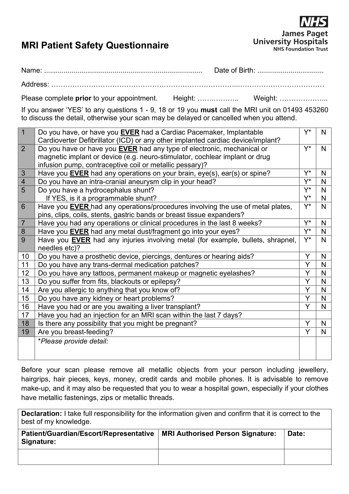
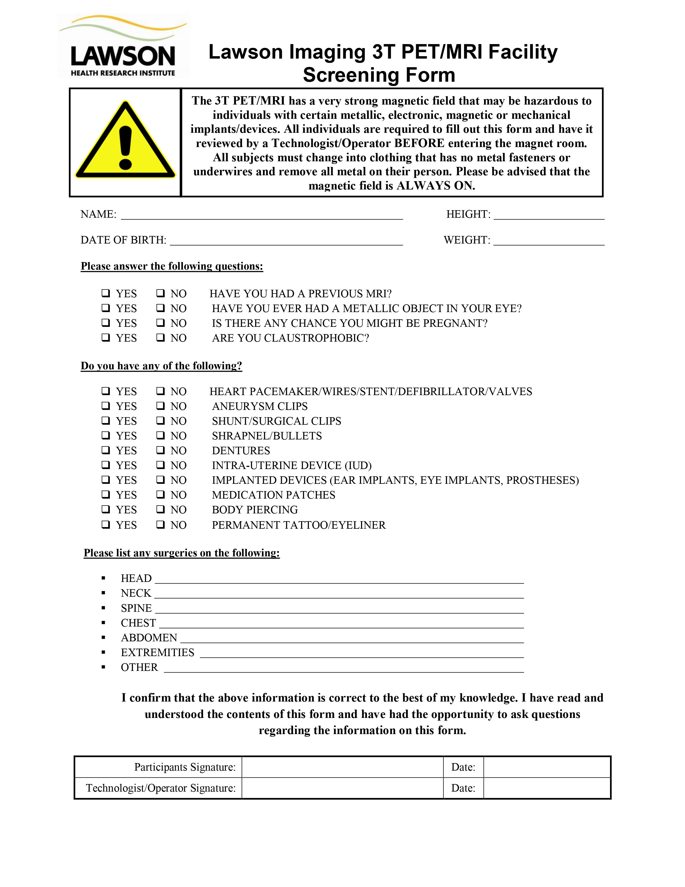

MRI Screening Forms
MRI screening forms are essential documents used to gather important information before undergoing an MRI scan. These forms typically include patient details, medical history, and specific questions related to the reason for the scan. Accurate completion of these forms ensures that the MRI procedure is tailored to the patient's needs and helps in identifying any potential issues or contraindications.
The forms also assist in verifying patient consent and provide a comprehensive overview for the radiologist performing the scan. Understanding and filling out these forms correctly is crucial for the effective and safe execution of the MRI screening process.
Sample Screening Forms

